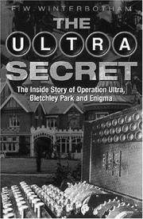

A ranking security official in Pnompenh said he was shocked
by news that hun dreds of bodies had been seen floating in the Mekong
River and that he had ordered an immediate
investigation. He said that no responsible official
had ordered a mass execution.
Lieut. Col. Kim Eng Kouroudeth, chief of army intelligence, said that he did
not know what had happened, but that he assumed the dead might have been the
victims of the wrath of a population aroused by the collusion between Viet namese
residents of Cambodia and the Vietcong and North Vietnamese forces that had
in vaded Cambodia.
A French Roman Catholic priest in Neak Luong, a town on the Mekong
River, estimated today that about 1,000 bodies had
floated downstream since last Monday afternoon. Many of the bodies
were tied together in groups of up to 10, and many also had their handstied.
Neak Luong is midway be tween Pnompenh, about 40 miles upstream, and the
point at which the Mekong crosses into South Vietnam. No bodies
have been seen in the river at the capital and as far down stream at the
village of Meat Krasar, eight miles down from Pnompenh. The assumption is,
therefore, that the bodies were dumped into the Mekong in the stretch
between Meat Krasar and here.
At a military briefing in Pnompenh today, Maj. Am Rong said that the
Government wanted to protect the rights of innocent
namese, but he did not list any security measures that
had been taken.
Sisco Drops Jordan Visit After Anti‐U.S. Riots
WASHINGTON, April 16 (AP)—Joseph J. Sisco, Assist ant
Secre tary of State for Near Eastern and South Asian Affairs, has
decided not to visit Jordan on his present tour of the area because of
the violent anti‐American demonstrations yesterday in Amman, the
State Department announced today.
In view of recent developments in Jordan, Mr. Sisco decided to
defer his planned stop in Amman
, Robert J. McClos key, the department press of ficer, said at a news
conference. Mr. McCloskey said that this left open the
possibility that Mr. Sisco would go to Amman at another time.
Mr. Sisco is in Israel after visits to the United Arab Repub
lic and Cyprus. He had been scheduled to go to Amman to morrow for a one‐day visit
that was to have included a meet ing with King Hussein.
Mr. McCloskey said that the dropping of Amman from Mr. Sisco's itine
rary was “the only change of plans we know of now.” Mr. Sisco is
planning to go to Beirut, Lebanon and from there to Teheran,
Iran,to at tend a conference of United States
ambassadors in the Middle East and South Asia on April 20 and 21.
The Ultra Secret
This book reveals the greatest secret of World War II after the
atom bomb. It is a must for World War II and Intelligence buffs.
But it has to be read with caution.
"The Ultra Secret" tells how the British and the Americans
exploited the information they obtained from
cracking German messages enciphered with a cipher
machine named the "Enigma." So valuable was this intelligence that it was
given a special security classification, "Ultra," which the intelligen
ce itself came to be called. The author, an R.A.F. officer, was put in
charge of distributing Ultra under tight security to Churchill and to commands around
the world. Winterbotham therefore saw much of the output and in this
book has correlated it with the events of the war.
The stories he tells are revelations.
During the Battle of Britain, Ultra told the R.A.F. Fighter
Command well in advance of radar detection how many
bombers would be thrown against England and when. This enabled the
British to parcel out their few fighters so that some would always
be available to attack an oncoming wave. These tactics denied the Germans
command of the air over England and consequently any possibility
of invasion.
On July 15, 1928, Polish cryptanalysts noticed a decided
change in the letter frequencies of German army crypto
grams, which they were intercepting. The Poles quickly conclud
ed that the Germans had begun using the Enigma, which was
invented and public ly sold early in the 1920's. Purchase of
one of the commercial models showed that the Reichswehr had altered it
for secrecy.

F.W.Winterbotham, "The Ultra Secret"
In 1932, the Polish Biuro Szyfrów (cipher bureau) got addi
tional manpower in the form of three young mathematicians. Henryk
Zygalski, Mann Rejewski and Jerzy Rozycki. They had achieved a
partial solution in their office, hidden in the forest of Pyry
outside Warsaw, when Poland's French allies furnished some key
Enigma documents. Major Gustave Bertrand of French
cryptographic espionage had obtained them from a Reichswehr
cipher unit employe, Hans-Thilo Schmidt, who wanted money. (Bertrand has
told this story in his book, "Enigma.") With this help, the Poles comple
ted their solution, and on July 26, 1939, presented two re
constructions of the machine to the French and two to the English.
These enabled the British codebreaking unit at Bletchley, a small
town 50 miles northwest of London, to solve the later varia
tions of the machine and other machines used for different
branches of the German armed forces. Security forbade
Winterbotham from recounting these details, but he proper
ly and generous ly credits the achievement. To gene
rate up-to-the-minute so lutions for these other machines, in
cidentally, the Bletchley geniuses evolved perhaps the first
modern electronic computer, which they nicknamed
the "Colossus."
Why has this story remained uder tight wraps so long? It seems that after
World War II, Britain gathered up as many of the tens of thousands of
Enigmas as she could find and later sold them to some of the emerging
nations. Presumably if she could read Enigma messages in
1940, she could do so in 1950. Only recently have these
countries replaced their Enigmas with new cryptosystems.